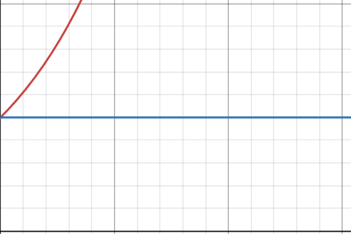

Mathematics section
As said, when you do physics you stubmle upon some mathematics, which helps you to write and express nature in equational forms :D
As said, when you do physics you stubmle upon some mathematics, which helps you to write and express nature in equational forms :D
Yeah it was but to truly understand phyiscs you need to truly get mathematics too :D
A short notice for all, since here i am gonna do only this article for mathematics but it would be a big article :D And also things would be very very random , so yeah just go cause you love maths
Have you heard about the inequality \( \frac{a+b}{2} > \sqrt{ab} \)
This is known As AM-GM inequlaity and the proof is pretty easy
\[(\sqrt{a}-\sqrt{b})^2>0\] \[(a+b-2\sqrt{ab})>0\] \[(a+b)/2 > \sqrt{ab}\]See this was a very easy proof, but you know lemme give you something like this..
\[let\ f(x) = 2xtan^{-1}(x)-log(1+x^2)\] \[let\ g(x) = (ln(1+x))^{-1} - \frac{1}{x}\]Then prove that:
\[g(f(cos(sinx))) < g(f(cos(cos(sinx))))\ \forall x \in (0, \frac{\pi}{2})\]That is a strech, but i would tell you how to make and solve these questions as told by my teacher too
Lets focus on this first.
\[\forall x \in (0, \frac{\pi}{2}), prove\ that\ \] \[cos(e^x) < cos(1+x+\frac{x^2}{2})\]How do we prove this??
Lets think how this question is made in the first place
Since we know that \(e^x\) is greater than 1 \( \forall x \in (0, \frac{\pi}{2})\) then we can integrate both sides and then we would get something like this. (btw this result could be very easily proven too)

After integrating both sides we would get an inequaltiy we get something interesting as you notice, in the graph that, if we integrate on both the sides from x = 0 to x = X, then we could get something like \(e^x - 1 > x\) and then we can write this as :
\[e^x > 1+x \] \[integrating \ both\ sides\ \] \[e^x > 1+x+\frac{x^2}{2}\]Since cos is a decreasing function than what we can say
\[cos(e^x) < cos(1+x+\frac{x^2}{2})\]Hmm wasn't it interesting :D This was an interesting point of view :D